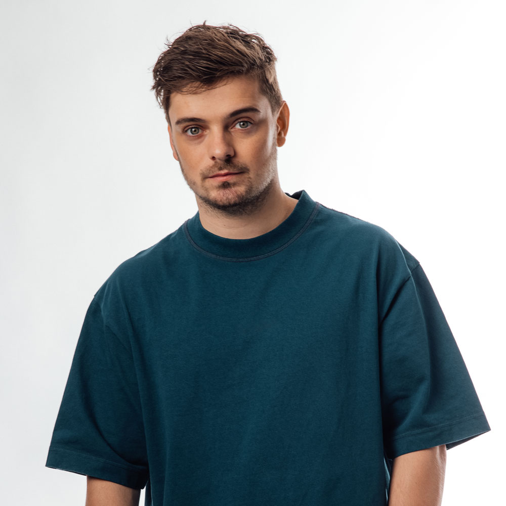

Martijn Gerard Garritsen (/gæɹɪks/; Amstelveen, 14 de mayo de 1996), más conocido como Martin Garrix, es un DJ y productor neerlandés fundador del sello STMPD RCRDS. Actualmente ocupa el puesto #1 en la encuesta realizada en 2022 por la revista DJmag. También es conocido por sus seudónimos "Ytram" y "GRX".
Ingresó a la encuesta anual Top 100 DJ's realizada por la revista DJ Magazine, directamente al puesto 40. En 2014, obtuvo el 4°puesto y en 2015 fue nombrado 3º. En 2016, 2017, 2018 y 2022 fue elegido por la revista como mejor DJ del mundo, colocándolo en el puesto número 1. En 2019 descendió al segundo puesto y en 2020 al tercero.
Su éxito comenzó con el lanzamiento de la canción "Animals", el 17 de junio de 2013 por la discográfica Spinnin' Records. La canción alcanzó el puesto #1 en Bélgica y en Reino Unido, y el puesto #3 en Irlanda. El sencillo Wizard, producido con Jay Hardway, también fue un éxito en numerosos países en 2013.
Aprendió a utilizar la guitarra a los 8 años de edad, y en 2004 expresó su interés por la música electrónica después de ver a Tiësto realizar una presentación en los Juegos Olímpicos de Atenas. Tomó como inspiración el sencillo "Traffic", que lo impulsó a descargar un programa especializado llamado FL Studio, el cual le permitió empezar a componer. A los 12 años de edad, comenzó a tocar en los cumpleaños de sus padres con el alias "DJ Marty". Finalizó sus estudios en la Academia Herman Brood, una escuela de producción musical en Utrecht donde conoció a su amigo Julian Jordan.
En el mes de abril, lanza junto a Sleazy Stereo su sencillo titulado como "ITSA". Su primer sencillo en solitario fue lanzado en el mes de septiembre titulado cómo "Keygen". Su primera canción junto a su amigo Julian Jordan fue "BFAM", el nombre de la canción es la abreviatura de "Brothers From Another Mother", en español, "Hermanos de otra madre". Su remix de una canción de Christina Aguilera, Your Body, fue incluida en la versión deluxe del álbum Lotus. Como último sencillo de este año, colabora por primera vez con Jay Hardway, lanzando el sencillo titulado como "Registration Code".